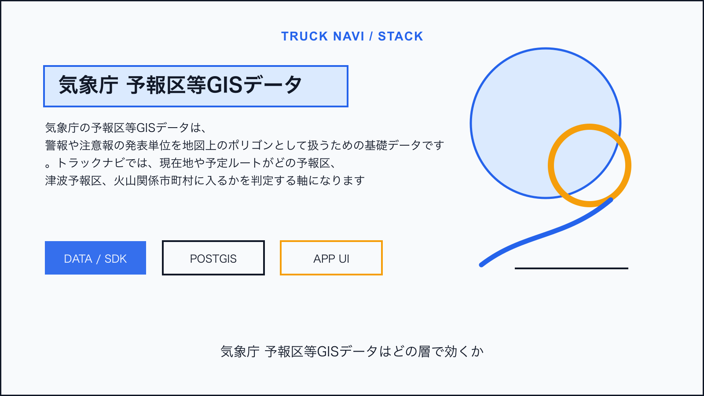
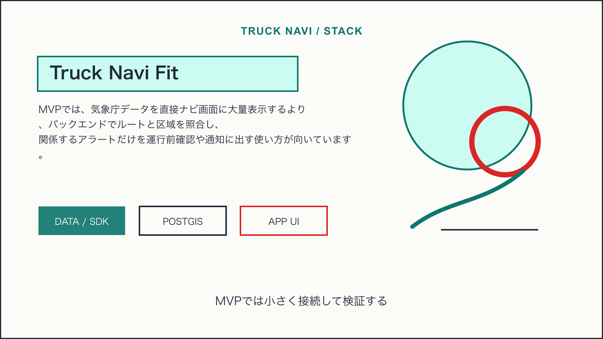
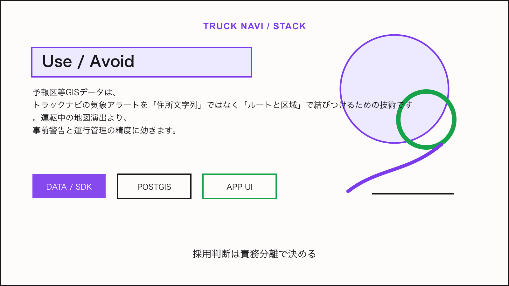

Tech Stack / Truck Navi
気象庁予報区等GISデータをトラック向け気象アラート境界に使う

この技術は何か
気象庁の予報区等GISデータは、警報や注意報の発表単位を地図上のポリゴンとして扱うための基礎データです。トラックナビでは、現在地や予定ルートがどの予報区、津波予報区、火山関係市町村に入るかを判定する軸になります。
NERV防災のライセンス情報から見える利用形態: 府県予報区等、緊急地震速報／地方予報区、緊急地震速報／府県予報区、津波予報区、市町村等（火山関係）。
トラックナビで使えそうな理由
MVPでは、気象庁データを直接ナビ画面に大量表示するより、バックエンドでルートと区域を照合し、関係するアラートだけを運行前確認や通知に出す使い方が向いています。

アーキテクチャ上の置き場所
予報区ポリゴンをPostGISに取り込み、ルートライン、出発地、目的地、休憩予定地点と空間結合します。アラート本文は気象庁XML等の別データとIDで接続し、地図には該当区間だけを薄く表示します。
Mobile App / Admin UI
↓
Truck Navi API
↓
PostGIS / business data
↓
Map, tile, weather, or device layer採用時の注意点
- 気象情報の公式発表時刻と更新遅延を扱う
- 区域に入っただけで危険と断定せず、情報種別と運行判断を分ける
- 災害情報は医療・消防・避難判断を代替しない
結論
予報区等GISデータは、トラックナビの気象アラートを「住所文字列」ではなく「ルートと区域」で結びつけるための技術です。運転中の地図演出より、事前警告と運行管理の精度に効きます。

Sources
この技術を使っていると表明しているサービス
- NERV防災は、提示されたライセンス情報上で気象庁の予報区等GISデータを利用していると表明している。